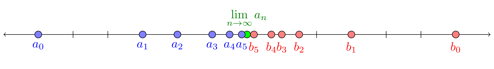
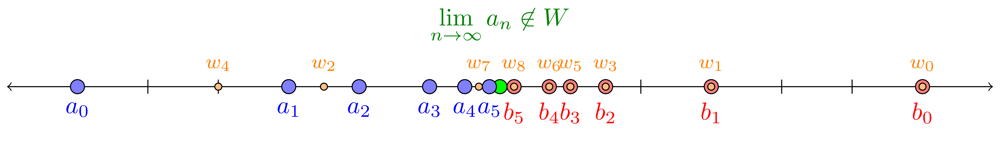

| Steven Clontz |
|---|
| University of South Alabama |
Several ideas from topology and set theory may be characterized by considering two-player infinite-length games. During each round \(n\in\omega=\{0,1,2,\dots\}\text{,}\) suppose Player 1 makes a move \(a_n\) (perhaps choosing an open cover of a given regular space), followed by Player 2 making a move \(b_n\) (perhaps choosing a finite subcollection from 1's chosen cover); the winner of such a game is determined by the sequence of moves \(a_0,b_0,a_1,b_1,\dots\) (perhaps Player 2 wins if their choices form a cover).
The topological game specified above is known as Menger's game, and Player 2 has an unbeatable strategy that only uses information limited to the round number and the most recent move of Player 1 in this game if and only if the given regular space is \(\sigma\)-compact. In this talk, we will explore various results of this flavor found in the literature, including an interesting game-theoretic proof appropriate for undergraduates that the real numbers are uncountable.
Let \(W\subseteq\mathbb R\text{.}\) Then \(CG(W)\) denotes the following game played by players \(I\) and \(II\text{.}\)
During round \(0\text{,}\) \(I\) chooses some real number \(a_0\text{,}\) followed by \(II\) choosing \(b_0\) such that \(a_0\lt b_0\text{.}\)
During round \(n+1\text{,}\) \(I\) chooses \(a_{n+1}\in(a_n,b_n)\text{,}\) followed by \(II\) choosing \(b_{n+1}\in(a_{n+1},b_n)\text{.}\)
After \(\omega=\{0,1,2,\dots\}\)-many rounds, \(I\) wins this game in the case that \(\displaystyle\lim_{n\to\infty}a_n\in W\text{.}\)
(This game seems to be introduced by Grossman and Turett in the problems section of Mathematics Magazine Vol. 71, with some further analysis done by Matt Baker in a later volume.)
It'd take some time to complete this kind of \(\omega\)-length game.
However, each player in such a game can define a strategy \(\sigma:M^{\lt\omega}\to M\) that designates their moves in response to their opponent's actions...
Typically, we want to prove something about the existence of winning strategies that defeat any counter-strategy chosen by the opponent.
If player \(P\) has a winning strategy for game \(G\text{,}\) we write \(P\win G\text{.}\)
\(I\win CG(\mathbb R)\text{.}\)
If \(W\) is countable, then \(II\win CG(W)\text{.}\)
\(\mathbb R\) is uncountable.
If \(W\) is countable, then \(II\win CG(W)\text{.}\)
Let \(W=\{w_n:n\in\omega\}\text{.}\) Then if any element of \(W\) is legal to play during Player \(II\)'s turn, their strategy is to play \(w_n\text{,}\) where \(n\) is the minimal ordinal such that \(w_n\) is legal to play. Otherwise, Player \(II\) chooses arbitrarily.
At the end of the game, each element \(w_N\in W\) was either played before round \(N\text{,}\) or was illegal to be played in round \(N\text{.}\) Either way, \(w_N\not=\lim_{n\to\infty} a_n\text{,}\) so Player \(II\)'s strategy is winning.